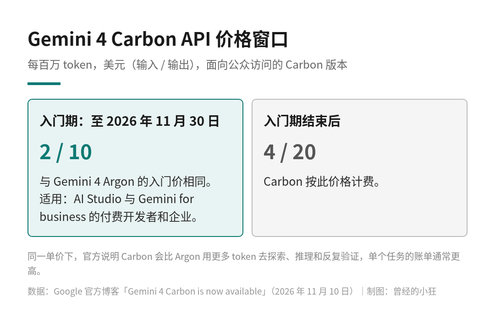
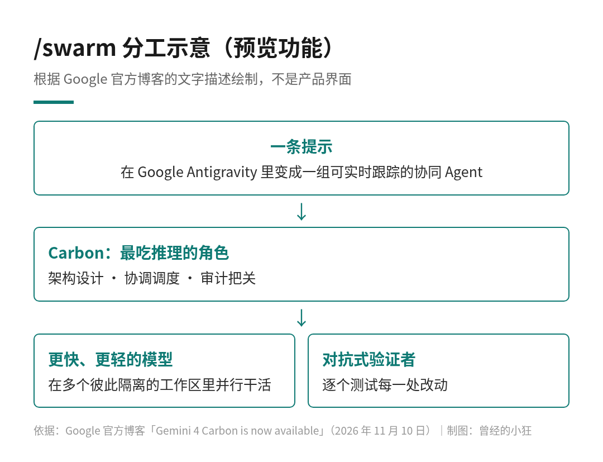

11 月 10 日，Google 把 Gemini 4 Carbon 放了出来。两周前，它还只通过 Fairwind Program 交给一批网络安全防守方试用；现在，付费开发者、企业和 Google AI Ultra 订阅者都能用上了。
Gemini 的订阅档位和入门用法，图鉴那篇已经写过。这篇只说三件跟钱和选型有关的事：Carbon 和 Argon 到底怎么分工，API 入门价窗口开到哪天，还有同一篇公告里预览的 /swarm 是个什么东西。
Gemini 4 Carbon 发布题图。图片来源：Google 官方博客
官方把入口分成了五类人，我按「你是谁」重排一下。
开发者：用 AI Studio 和 Android Studio 里的 Gemini API 付费档；如果你同时是 Google AI Ultra 订阅者，还能在 Google Antigravity 和 AI Studio 里试。
企业：在 Gemini for business 里通过 API 或模型下拉菜单选 Carbon，也可以在 Antigravity 和 CodeMender 里用。
普通用户：Google AI Ultra 订阅者，可以在 Gemini 应用和搜索的 AI Mode 里用。官方写的是「正在向所有 Ultra 订阅者推送」，所以有人早一点、有人晚一点看到。
科研人员：可以申请通过 Antigravity 的最高用量档，免费用 Argon 和 Carbon 六个月，按资格、容量和遴选结果滚动接入。这个计划四周前先面向 Argon 开放，名额是一万名科学家，官方说已经接入了几千人，现在把 Carbon 也加了进来。
网络安全防守方：申请加入 Fairwind Program，用的是专门面向网络安全的 Carbon。
一句话：API 走付费档，消费端只写了 Ultra。免费档和其他订阅档的用户，眼下在官方公布的入口里还看不到 Carbon。
Google 在公告里把分工写得很明白：Argon 仍然是大多数软件工程和知识工作的理想选择；Carbon 留给那些考验模型智力上限的任务，比如复杂的多步编码和调试，以及开放式的科学研究和发现。
关键是后半句：Carbon 会比 Argon 用更多 token，去更彻底地探索、更深地推理，并跑更长的验证循环。换句话说，Carbon 贵不贵，不只看单价，更要看它一个任务会花掉多少 token。入门期两者单价一样，但同一道题交给 Carbon，账单通常会更高。
那什么活值得交给 Carbon？官方点了几类：需要多 Agent 协作的工程任务，比如跨多个包的迁移、跨子系统追查根因、复杂的架构重设计；在法律、金融和企业运营里，从大量密集文档和数据中做有依据的综合分析，并按严格格式生成表格、演示稿和报告；还有物理、数学、生命科学方向的多步推理。
我自己的用法会是这样：日常改代码、写文档、做常规分析，继续用 Argon；碰到要拆成很多步、要反复验证、错了代价很高的活，再切 Carbon。网络安全攻防研究，则走 Fairwind 那条专门通道。
官方当然也报了成绩。Google 说，Carbon 在 CursorBench 4.0、Perplexity 的 WANDR 和 Zapier 的 AutomationBench 上排第一，每个任务的成本比排在后面的最佳外部模型低一半以上；在与 Artificial Analysis 合作推出的多模态知识 Agent 基准 MKA 上排第二，平均每个任务的成本比第一名低六倍以上。这些是 Google 自己发布时的说法，读的时候要连着榜单名一起看。
钱的部分最好记。Carbon 的 API 和 Argon 共用入门价：每百万 token 输入 2 美元、输出 10 美元。适用对象是 AI Studio 和 Gemini for business 上的所有付费开发者和企业。
入门期在 2026 年 11 月 30 日到期。之后 Carbon 按每百万 token 输入 4 美元、输出 20 美元计费，正好是入门价的两倍。官方脚注还写明，这个价格只适用于面向公众访问的 Carbon 版本。

Gemini 4 Carbon API 价格窗口，每百万 token，美元。数据来自 Google 官方博客，制图：曾经的小狂
从 11 月 10 日发布算起，这个窗口只有 20 天。我的建议是：如果你们团队一直想知道 Carbon 值不值，现在是试错成本最低的时候。拿几道真实的难题，分别交给 Argon 和 Carbon 跑一遍，记下完成率和各自用掉的 token；12 月以后再按 4 / 20 美元重新算账，看哪些活真值得长期交给 Carbon。
预算上要提醒一句：入门期结束后 Carbon 单价翻倍，加上它本来就更费 token，两者叠在一起，长期成本可能比你在 11 月里感受到的高出不少。
同一篇公告里，Google 预览了 Antigravity 的一个新功能：/swarm。
官方的描述是，它能把一条提示变成一支协同工作的 Agent 团队，你可以实时跟踪它们在干什么。开发者可以把 Carbon 放在最吃推理的角色上，比如架构设计、协调调度和审计；再配上更快、更轻的模型，在多个彼此隔离的工作区里并行干活，另有对抗式的验证者逐个测试每一处改动。

/swarm 分工示意，根据 Google 官方博客的文字描述绘制，不是产品界面。制图：曾经的小狂
打个比方，Carbon 在这里像总工程师兼质检主管，不亲自搬每一块砖，但图纸是它画的，最后验收也是它签字。
官方给了几个用 /swarm 做出来的例子：一支 Carbon Agent 团队用一条提示，把历史照片和工程图版做成了一个可交互的 Three.js 3D 展览，还原埃菲尔铁塔 1887 年到 1889 年的建造过程；另一支多 Agent 团队拿着七份公开的市议会规划 PDF（从中提取出 206 个工程图视图）和一条提示，经过 10 轮通宵循环，搭出了 Google Platform 37 办公楼的交互式 Three.js 模型，一共 90.6 万个三角面。
需要说清楚的是，/swarm 目前是预览。它和最近大家都在说的「让大模型当调度者、小模型去执行」是同一个方向：贵的脑子负责想清楚和把关，便宜的手负责并行干活。
Carbon 的网络安全能力更强，Google 说在 Argon 的安全体系上又加固了一层，防滥用和防提示注入是重点。几组官方数字：
在用 ExploitBench 和 CyScenarioBench 搭的模拟网络攻击环境里，面对一个每次被拦后都会调整攻击计划的自适应红队 Agent，Carbon 拦下了 99% 的攻击路径，单次尝试的突破率降到 0.8%，Argon 是 3.1%。Gray Swan 的测试中，自动化网络攻击请求的成功率是 2.17%，Argon 是 9.86%。外部机构 Trajectory Labs 测了 132 个小时、一万三千多次请求，没有发现新的通用越狱方法。
诚实度上，在 Google 自己的 375 个 Agent 任务诚实度基准里，Carbon 通过了 92%，Argon 是 70%。间接提示注入方面，Carbon 在 Gray Swan 的 IPI 基准上攻击成功率为 0%；Google 同时也承认，防提示注入仍是需要继续改进的方向，更复杂的攻击在某些情况下仍有空间。
这些数字有的来自 Google 内部，有的来自它点名的外部测试方，都是发布材料里的说法。
把这篇压成三句话：Argon 还是主力，Carbon 留给更长、更难、要反复验证的活；Carbon 的 API 入门价和 Argon 一样是 2 / 10 美元，到 11 月 30 日结束，之后 Carbon 是 4 / 20 美元；/swarm 让 Carbon 当总工程师，带着一群轻模型干大项目，现在还在预览。
如果你在 11 月里有空，拿一道真难题去试试 Carbon。试完再决定 12 月要不要为它多付一倍的钱。
来源清单：
Google 官方博客：Gemini 4 Carbon is now available：https://blog.google/innovation-and-ai/models-and-research/gemini-models/gemini-4-carbon-now-available/